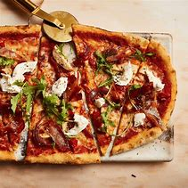
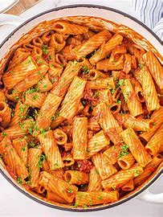

Pizza
Pizza is an Italian dish typically consisting of a flat base
leavened wheat-based dough topped with tomato, cheese,
and other ingredients, baked at a high temperature
- (170 g) self-rising flour
- (240mL) plain Greek yogurt
- 2 cloves of garlic
- (710mL) tomato purée
- (9.9mL) red wine vinegar
- Ingredients with Quantities:

Equipments Required:
- Oven
- Oven Plate
- Kneeding Pin
- Combine 1½ C (170 g) self-rising flour and 1 Cup (240mL) plain Greek yogurt.
- Stir these ingredients into a dough, then knead it for 8–10 minutes.
- Spread the dough onto a pizza pan and bake at 500 °F (260 °C) for 5 minutes.
- Mix together 3 Cups of (710mL) tomato purée and 2 tsp (9.9mL) red wine vinegar.
- Mince 2 cloves of garlic and stir them into the tomato sauce mixture.
- Top the pizza dough with sauce, cheese, and your favorite toppings.
- Bake the pizza for another 5–7 minutes.
- Instructions to Make
Serving Size: 2-6
Cooking Times: 40-1:30 mins
Pasta
Pasta is a type of food typically made from an unleavened dough of wheat flour mixed with water or eggs, and formed into sheets or other shapes, then cooked by boiling or baking.Typically consumed with a rich tomato base
- 1kg/2lb 4oz ripe cherry tomatoes
- 2 sprigs fresh rosemary
- extra virgin olive oil
- 1 whole garlic bulb
- 300g/10½oz dried pasta
- 125g/4½oz mascarpone
- 50g/1¾oz Parmesan or Grana Padano (or similar vegetarian hard cheese), grated
- handful fresh basil, finely shredded
- salt and freshly ground black pepper
- Ingredients with Quantities:

Equipments Required:
- Pot
- Strainer
- Kinfe & Chopping Board
- Preheat the oven to 200C/180C Fan/Gas 6.
- Put the cherry tomatoes and rosemary in a large roasting tin. Drizzle with olive oil, season generously with salt and pepper and stir to coat.
- Using a sharp knife, slice off the tip of the garlic bulb to expose the cloves. Put the bulb on a square of foil, cut-side up. Season with salt and pepper, drizzle with olive oil and wrap in the foil.
- Nestle the garlic among the tomatoes and pop the tin into the oven to roast for 45 minutes.
- Discard the rosemary and transfer the garlic bulb to a plate to cool for 15 minutes.
- Meanwhile, cook the pasta in boiling salted water according to the packet instructions.
- Squeeze the garlic cloves over the roasted tomatoes and add the mascarpone, Parmesan and basil. Stir to combine and season with salt and pepper to taste.
- Drain the pasta, reserving some of the cooking water. Add the pasta to the roasting tin, with a splash of the pasta cooking water, and stir until the pasta is well coated in the sauce, then serve.
- Instructions to Make
Serving Size: Serves 3–4
Cooking Times: 30 mins to 1 hour
Lasagne
Lasagna,is a type of pasta, possibly one of the oldest types, made in very wide, flat sheets. In Italian cuisine it is made of stacked layers of pasta alternating with fillings such as ragù (ground meats and tomato sauce), béchamel sauce, vegetables, cheeses (which may include ricotta, mozzarella, and Parmesan), and seasonings and spices.
- 4 tbsp olive oil
- 4 celery sticks, finely chopped
- 1 medium onion, finely chopped
- 2 garlic cloves, peeled and crushed
- 1 sprig rosemary
- 700g/1lb 9oz beef mince
- 340g/12oz pork mince
- 1 bottle red wine (750ml/26½fl oz)
- 2 x 400g/14oz cans tomatoes, roughly chopped
- 200ml/7fl oz beef stock
- salt and freshly ground black pepper
- 1 litre/1¾ pints whole milk
- 2 bay leaves
- ¼ onion
- pinch freshly grated nutmeg
- 50g/2oz butter
- 50g/2oz plain flour
- 14 sheets fresh lasagne pasta
- 3 125g/4½oz balls mozzarella, cut into small cubes
- small handful grated parmesan
- freshly ground black pepper
- 2 tbsp butter
- Ingredients with Quantities:
For the bechamel sauce:
For the lasagne:

Equipments Required:
- Oven
- Frying Pan
- Wooden Spoon
- Baking Tray
- Preheat the oven to 180C/350F/Gas 4.
- For the ragu, heat the olive oil in a frying pan over a low heat and fry the celery, carrots and onion for approximately 15 minutes, until softened and golden. Add the garlic and rosemary and fry for two more minutes.
- Add the beef and pork mince and cook until the liquid from the meat has been absorbed.
- Pour in approximately 400ml/14fl oz of red wine and stir well. Cook for approximately 45 minutes.
- Once the wine has evaporated, add the tomatoes and stock. Leave the mixture uncovered to cook slowly for two hours. Top up with more warm stock if necessary. Season with salt and freshly ground black pepper to taste.
- To make the bechamel sauce, place the milk in a large non-stick saucepan, add the bay leaves, onion and nutmeg and gently bring to the boil.
- In a separate saucepan melt the butter and add the flour. Beat well and cook for two minutes. Remove the milk from the heat and add a little to the flour mixture. Combine well, and when all the milk has been absorbed, add a little more. Continue to do this until all the milk has been added, whisking continually.
- For the lasagne, blanch the pasta in salted boiling water for three minutes. Spoon a third of the bechamel sauce into the bottom of a lasagne dish in a layer, then place some of the pasta strips over the top. Follow this with some of the mozzarella and parmesan, and sprinkle over freshly ground black pepper. Follow with a layer of ragu. Repeat this step twice until all the ingredients have been used up. Dot knobs of butter over the surface and cook in the oven for 30 minutes, or until golden-brown on top and completely cooked through.
- Instructions to Make
Serving Size: Serves 10
Cooking Time: over 2+ hours